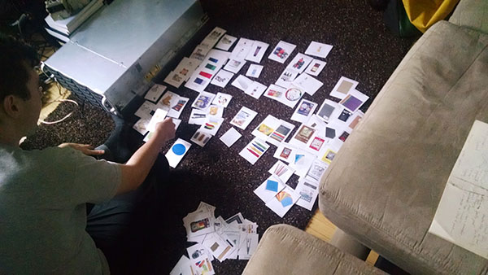
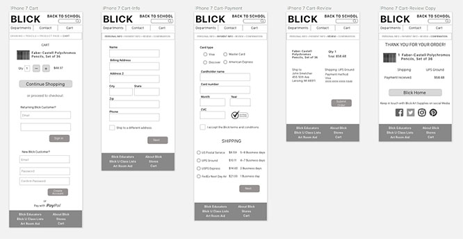

BLICK BACK TO SCHOOL
Ecommerce Web App Design • Timeframe: 2 weeks • Role: Designer
Blick Art Supplies has become the largest fine arts retailer in the nation, after growing for years and acquiring some competitors. In this project the goal was to add some new digital flair to the Blick brand. I designed a back-to-school site for Blick to feature 100 of its popular back-to-school products.
This was to be a responsive website, with a design that functioned in desktop, tablet, and mobile. It was also a challenge of information architecture, requiring a sorting and choosing of products.
This project was not requested by Blick and has no real connection to Blick. Rather, it's an excercise in the challenges of making a responsive e-commerce website for a company with thousands of products in its inventory.
Architecture of Information
As the largest fine art retailer, Blick carries thousands of highly specialized items. Categorizing this inventory is a challenge of information architecture. What is the hierarchy? What are the groups? The answers are not obvious. So I did a different kind of user testing. Information architecture questions meant that 'card sorting' was a good tool to use. We made one hundred cards with names and pictures of items and asked people to sort them into categories that made sense for them.
A user card sorting 100 items from the Blick inventory.
Card sorting was a challenge that some people seemed to enjoy while others found it infuriating. For many a lot of the artist materials were difficult to understand. There were things like acrylic mediums, gesso, guache, vellum, fixative spray, wire mesh, and plaster of paris. After several users had sorted in 'open card sorts', making up their own categories, I took the time to consolidate their categories, coming up with master categories. Then I had uers do 'closed card sorts' in which they fit the same cards into those categories as well as they could. This was a way to validate the categories.
We can't assume how our users understand the world. We have to test it.
In the end I came up with the following sitemap which portrays the architecture of information that I settled on after my user research.

Designing for Back to School
The design process was mobile-first, although for my main user type the desktop size was more important. But I feel it’s important to follow mobile-first design principles, and I started with a basic structure that looked like the image to the left.
Blick has a lot of features that are great for a back-to-school themed site, like Blick for Educators, Art Room Aid (donations for art classrooms), and “Blick U Class Lists”. I wanted to leave plenty of room in my site for those attractions alongside the main information architecture. The special back-to-school features would be displayed to the right of the product groupings of the left nav.
Going to Hi Fidelity
In my field research in Blick Stores I noticed people meandering and exploring single aisles for long periods, looking and touching. I think it's because the objects of art-making as well as art itself are so beautiful. Blick could use this beauty to greater effect on their site.
A balance between structure and content in the mobile view.
Growing the Design to Desktop Size
Mobile First Design Means that we set priorities and structure at phone size because it's easier to grow than to shrink down a large monitor's worth of content. But there are challenges in using the extra space well at larger sizes. Here are some tablet and desktop views of Blick Back To School.
Checking Out
One of the central challenges of ecommerce is the checkout process, which in my research told me could be as many as 7 screens long for some Blick competitors. How to do it efficiently? Can it even be pleasurable for the customer? I think if a customer appreciates ease of checkout that appreciation can reach the levels of enjoyment.
5 quick screens from cart to confirmation at phone size.
Just 1 quick checkout screen at desktop size.
Full Annotations At All Sizes
The brief called for full annotations at all sizes. Below are annotations for phone and tablet.